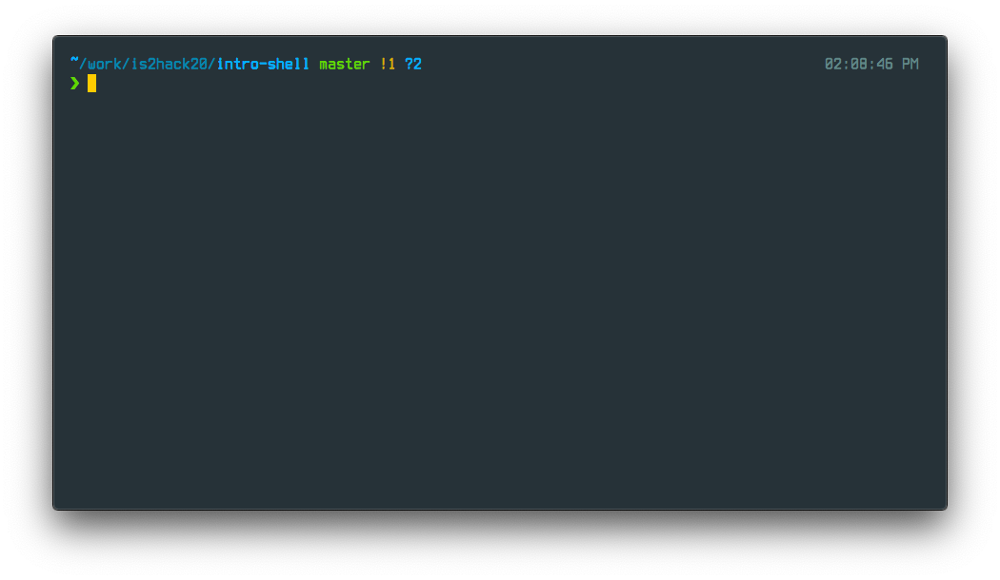

Introduction to the Shell¶

What is the Shell?¶
The shell is a program that takes commands from the keyboard and gives them to the operating system to perform.
It is the outermost layer of the OS, so it is a user interface to access the OS, through a graphical user interface (GUI) or through a command line interface (CLI).
On most linux systems a program called bash acts as the Shell program. There are also other Shell programs besides bash (like the different browsers we have to interact with the internet).
What is a Terminal?¶
The terminal emulator is another program that opens a window and lets you interact with the Shell.
Just like the Shell, there are a bunch of different terminal emulator programs that you can use.
The Terminal is synonymous with the command line or command prompt.
What are Shell Scripts?¶
A shell script is a file containing a series of commands. The shell reads this file and carries out the commands (as if they were entered on the command line).
The shell is somewhat unique, in that it is both a powerful command line interface to the system and a scripting language interpreter.
What are some basic commands?¶
Open a terminal in JupyterLab
Some basic commands:
pwd,ls,cd,mkdir,echo,mv,cp,cat,rmRead the docs for each command:
man commandTab-completion and history search
Run above commands from Notebook cells:
!pwd,!ls,!cd…Run commands from a shell script
Run the following commands on the Terminal
pwd
ls
ls -1
ls -l
ls -a
cd ~
pwd
ls
cd -
cd ..
pwd
ls
cd -
echo 'this text is printed on the screen'
echo 'this text is saved to a file' > file.txt
echo 'this is another line of text' >> file.txt
cat file.txt
cp file.txt file2.txt
mkdir test
mv file2.txt test/file3.txt
cat test/file3.txt
rm test/*
rmdir test
Read the documentation (manual pages) of each command
man pwd
man ls
man echo
...
Run the same commands on a Notebook cell but adding a ! in front if it
( this is the same as running on the Terminal but from a Notebook cell )
!pwd
!ls -1
!echo 'Hello from the Notebook cell :)'
Another way to run Shell commands from a Notebook cell is using %%bash
%%bash
# Dump the output of ls to a file
ls -l >> output.txt
# Show me the last 3 lines of the file
tail -3 output.txt
# Pipe the output of cat to wc, and count lines
cat output.txt | wc -l
# Find the word `commands` in files ending with *.txt
grep -H commands *.txt
# Remove the file we created
rm output.txt
Now run all the commands as a Shell script
!cat commands.sh
!sh commands.sh
Bash Shell Reference¶
Cheatsheet with a summary of the most common Bash commands.